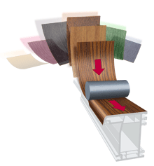
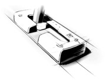
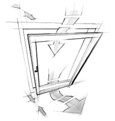
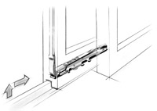
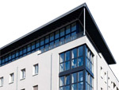
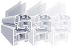

Izaberite proizvod Prozori | Vrata

Prozori
Boja i dizajn
Prozori i vrata sa bojom dobivaju novo lice. Koristite mnoštvo mogućnosti Gealan-ovih kombinacija boja.
6 komora
Jedinstvene profilne komore (patentirane) daju prozoru veliku vlastitu stabilnost.
Toplotna izolacija
Visoki zahtjevi iz EnEV (propis o štednji energije) se već pri debljini od 70 mm premašuju sa U-vrijednošću od 1,1 W/m2K.
Tu se usklađuju ekonomski i ekološki zahtjevi. A baš to je danas bitno.
 Skoro nevidljivi dihtung
Moderni dihtunzi usklađenih boja su tako postavljeni da im je vidna površina reducirana na minimum, i time su skoronevidljivi.
Odgovarajući izgled
Krila i okviri su konstruktivno optimalno usaglašeni i dopadljivi sa svojim blagim zaobljenjima. To doprinosi elegantnoj slici kompletnog prozora.
Elegantno rješenje preklopa
Različita rješenja sa prekrivanjem mjesta spojeva daju harmoničnu i elegantnu optiku prozora.
Raznovrsnost boja
Ne samo standardno bijeli pvc, već i u željenim bojama.
Dobar izgled nije dovoljan, pogotovo ne kod prozora. Ovdje je puno važnije da je osnovna funkcija prozora ispunjena. To ne štedi samo Vaš novac, već daje sigurnost i osjećaj ugodnosti.
 Najviši faktor sigurnosti
Sada ni provalnicima nije lako: Raznovrsnim izvedbama možete postići različite klase sigurnosti prema Vašem zahtjevu.
Ujedno svježi zrak
Ni tu nema problema: u prozorski profil se mogu po želji ugraditi različiti sistemi za provjetravanje. Vaši prostori seoptimalno provjetravaju - čak i pri zatvorenim prozorima.
Velika ušteda energije Najveći gubitak toplote na fasadi je uvijek na prozorima. Stoga ste sa Gealan-om na sigurnoj strani,jer prekoračujete izolacione vrijednosti koje se traže u EnEV.
Zaštita od buke
To je Vaš mir: Geometrija profila Gealan dozvoljava ugradnju specijalnih zvučno-izolacionih stakala.
Razvoj modernih prozorskih sistema iz kuće Gealan osim optičkih i sistemsko-tehničkih komponenti, takođe, uzima u obzir i najveći stepen funkcionalnosti. Dodatne funkcije prozora moguće je ostvariti širokim programom prateće opreme za prozore.
Svi načini otvaranja
Moguće je realizirati sve načine otvaranja, po građevinskom zahtjevu ili po vlastitoj želji: obično otvaranje ili nagibno, klizno ili sa fiksnim elementima.
Jednostavno čišćenje
Zahvaljujući profilima koji imaju ravne površine i zaobljene oblike bez oštrih rubova, prozorski okviri, kao i unutrašnji žljebovi, daju se dobro očistiti, kako sa unutrašnje tako i sa vanjske strane.
Pribor
Široki programi sporednih profila i prateće opreme obuhvataju specijalna rješenja za montažu, za
nesmetan tok ugradnje, preko roletni za zaštitu od
sunca, do specifičnih sistema za provjetravanje. Takođe
su moguća rješenja prema individualnim zahtjevima
kupaca.

Ukrašavanje velikih fasada
Specijalna statika za prozore velikih površina rješava se pomoću modificiranih pregleda i letvica. Uske vidne površine profila ostaju sačuvane kao i raznovrsnost u kreiranju fasada.
Profili
Kada se odlučite za naše prozore, portale i vrata,Vi ste se odlučili za sistem profila i dodatnih elemenata koji ispunjava sve zahtjeve moderne arhitekture.
Mi smo se opredjelili za sisteme profila koji zadovoljavaju i najstrožije zahtjeve u proizvodnji građevinske stolarije. Garantujemo izvanrednu statiku, odličnu zvučnu i termo izolaciju, otpornost na
ekstremne klimatske uslove, lako održavanje, moderan dizajn i široku paletu boja.
Naši proizvodi posjeduju sistem za provjetravanje čime se zauvijek rješava problem provjetravanja i konstantnog dovoda svježeg zraka.
Klupice
Vanjske klupice pružaju izvanrednu zaštitu od skupljanja vode na zidu.
Unutrašnje klupice kao dekorativni element dodatno će uljepšati vašu kuću. |